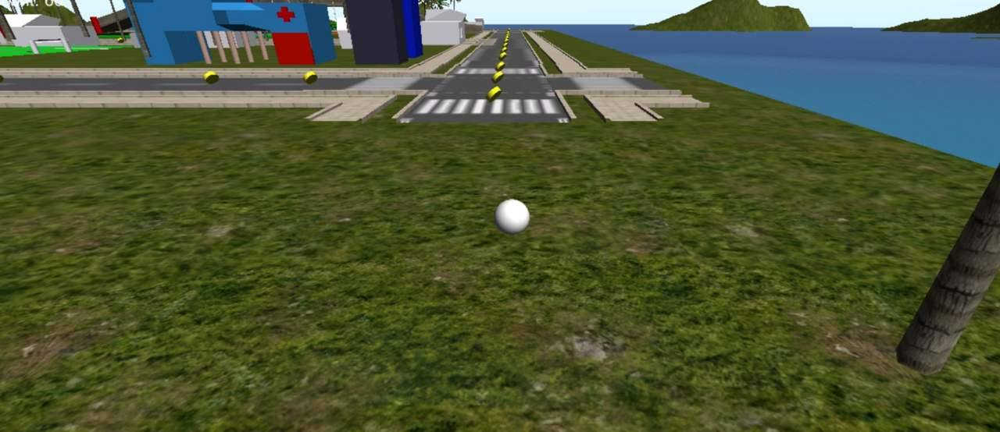
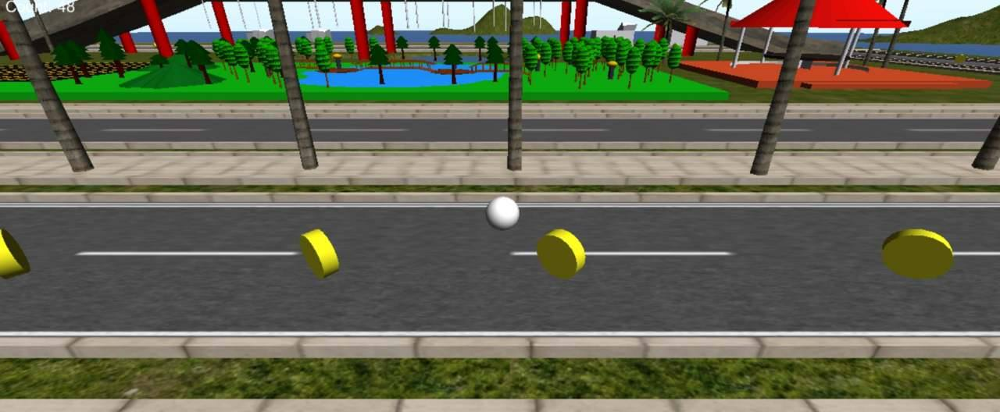
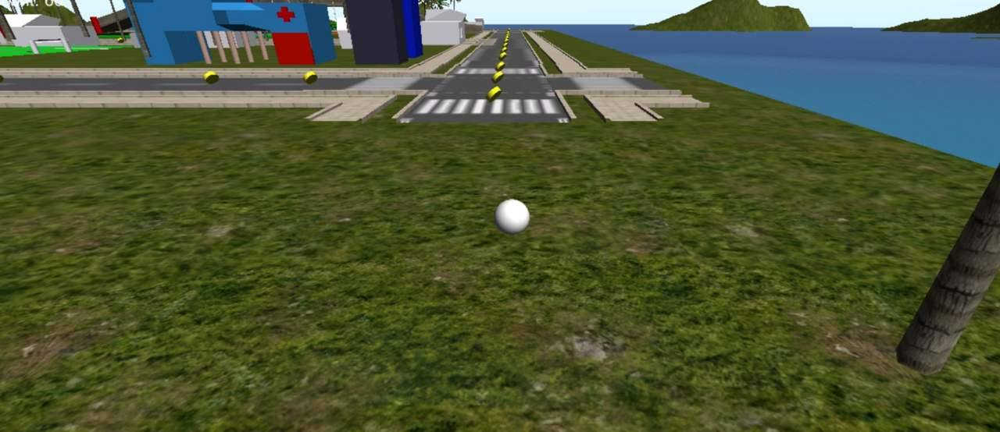
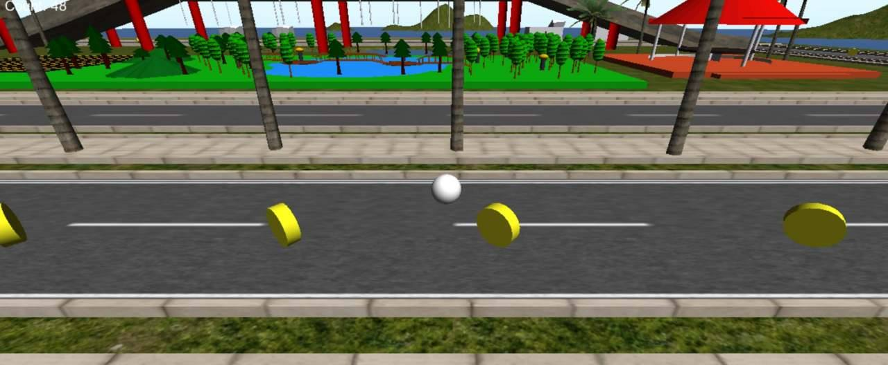

Unity es la definición de creatividad, con esta herramienta pudimos desarrollar juegos en tercera dimensión, con el cual pudimos importar nuestros archivos creados en blender para así darle una utilidad en nuestro mapeado, desarrollando nuestra creatividad y conocimientos al máximo, para darle forma a lo que queremos.
 
Para realizar esto requerimos de:
- Nuevas herramientas para modificar lo esntornos
- Objetos desde la tienda de unity
- Implementación de scripts
- Otorgamos forma y barreras de colisión a los objetos con el uso de coliders
- Realizamos un minijuego con todo lo aprendido
- Importamos objetos de blender
Opinión personal
Debido a lo acontecido en este ejercicio pude constatar de la imporatncia de los programas para poder así crear desde cero minijuegos y paisajes modificables por el usuario, así tambien conocí un poco más sobre lo que es la utilidad de los scripts para la presentación del mismo juego.